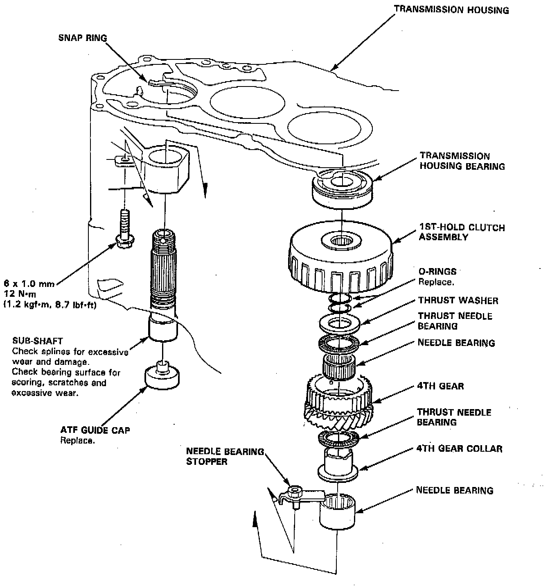
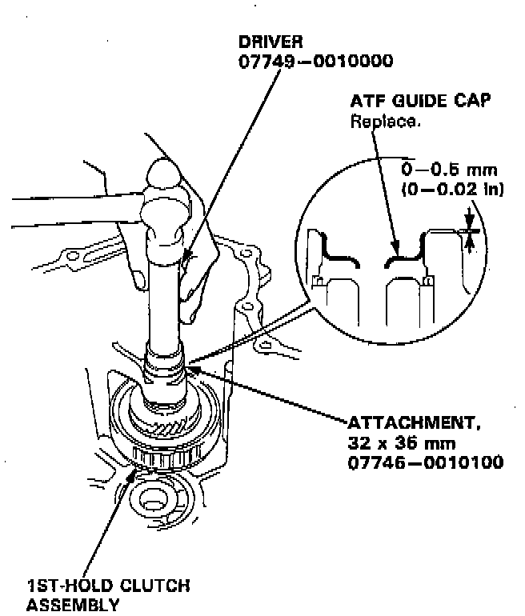

Overhaul
TOOLS REQUIRED- 07749-0010000 Driver
- 07746-0010100 Attachment, 32 x 35 mm
- Or Equivalent

NOTE:
- Lubricate all parts with ATF during reassembly.
- Inspect the thrust needle bearings and the needle bearings for galling and rough movement.
- Before installing the O-rings, wrap the shaft splines with tape to prevent damaging the O-rings.

1. Remove the ATF guide cap by pushing the sub-shaft inside the transmission housing.
2. Remove the 1st-hold clutch assembly by pulling the sub-shaft, then remove the sub-shaft.
3. Install new O-rings on the sub-shaft.
NOTE: Wrap the shaft splines with tape to prevent damaging the O-rings.
4. Place the sub-shaft in the transmission housing and install the 1st-hold clutch assembly.
5. Install new ATF guide cap using the special tools as shown.
NOTE: Install the ATF guide cap in the direction shown.